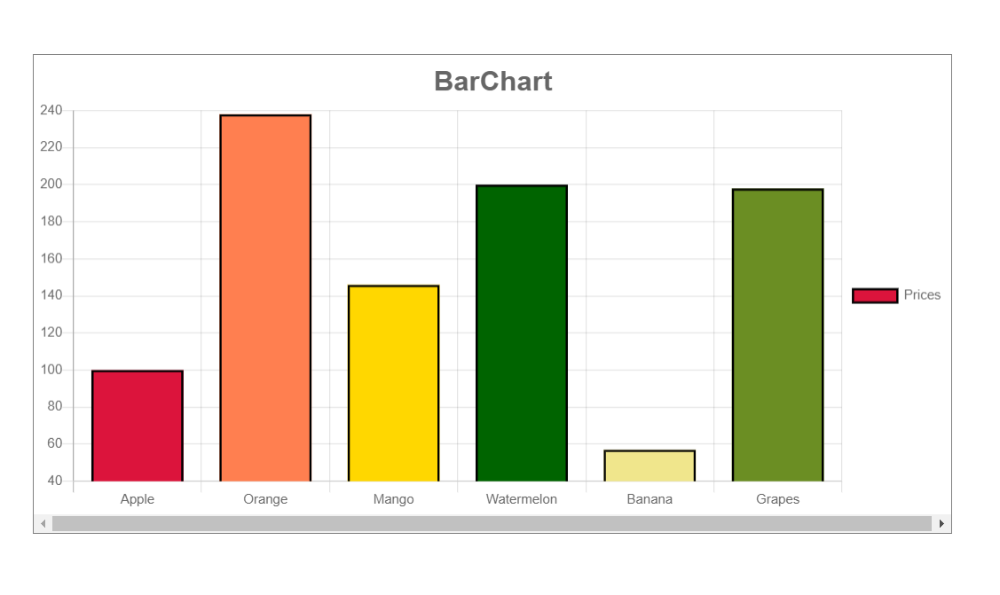

Chart.js with React | react-chartjs-2
Using Chart.js along with ReactJS allows us to create multiple charts using components and dynamic data.
Chart.js
can be used to create 8 types of charts:
Line, Bar, Radar, Doughnut & Pie, Polar Area, Bubble, Scatter, Area, and Mixed.
Pre-requisites:
Installation of ReactJS& NodeJS.
Start a project using
npx create-react-app graphsChange directory to the project graphs
cd graphsStart the server using the command
npm startINSTALLATION:
We will install react-chartjs-2 which is a React wrapper for Chart.js
npm install --save react-chartjs-2 chart.jsAlternatively, download the latest version of Chart.js from Github or use CDN links in script tags.
1. BAR CHART
In App.js,
Create new file Plot.js,
This file receives data from our App.js file as props and uses it to plot the charts
Apply some styles in App.css if you want. The output looks like this:
For Line, Pie and other charts
We will use the same data to see how Chart.js can be used to plot other types of charts.
In render() method of App.js, the Bar component can be changed to Line or Pie component
2. PIE CHART
Example
3. LINE CHART
Tip: Play around with properties like fill, line tension, etc to get some visually appealing results. Check out the official documentation for more details.
Example